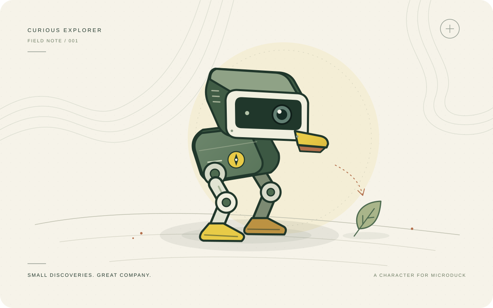

Curious Explorer is a character with a soft spot for small discoveries. This guide helps you meet it, understand what it can do today, and preserve your duck’s existing abilities.
01 / GET ACQUAINTED
Begin in the practice field.
You don’t need a robot to try this browser preview. Press Let’s explore, then introduce a rustling leaf, a new object, or a friendly hello. Watch the illustrated explorer’s response and read its field notes.
Give it a name, choose a comfortable adventure pace, and let it take a breather. Explorer’s energy changes as it wanders and rests. The encounters are supplied by you; this preview isn’t using a camera, recognizing real objects, or simulating robot physics.
A character rehearsal, before the real adventure. This is version 0.1.0. Physical robot operation is unsupported. There is no installer for the duck in this release.

02 / GOOD COMPANY
Your duck keeps what it knows.
Explorer is designed to choose when to act while the duck’s existing software carries out the movements. The add-on does not replace walking models, edit controller buttons, install new skills, or remove anything from your skill library.
The practice field includes an example walking style and an optional polite bow. Enable the bow if you’d like Explorer to use it for greetings. These are examples, not a reading of your robot. A local connection lists the skills reported by your endpoint instead.
Other controllers need their turn. Pause Explorer before using a gamepad or another app. A discrete skill that has already started may finish before the handoff is complete. This release uses an explicit handoff; it does not detect competing controllers automatically.
03 / TAKE A CLOSER LOOK
Run the local companion.
The companion serves this same interface from your computer. It works with Python 3.11 or newer and requires no third-party Python packages. From the downloaded project folder, run:
python3 -m explorer
Open http://127.0.0.1:8765 in your browser. The ordinary startup stays in preview mode.
Connect an existing Microduck simulator
The experimental connector targets Microduck API 44. Its tests use protocol fixtures; it has not been validated with a running official simulator. First set up the official Microduck MuJoCo simulator. It is separate software with its own setup and dependencies. Curious Explorer does not install it for you.
Point the companion at your simulator’s robot-control socket. The example below uses the official simulator’s typical path:
python3 -m explorer \
--socket "$HOME/.cache/duck-sim/duck-a.sock" \
--simulator
--simulator is your declaration that this endpoint is simulated. The robot’s control protocol cannot prove that distinction. Never point this preview at a physical robot.
Open Bring your simulator along in the interface, check the connection, and confirm that other controllers are paused. Enable simulator control, then start Explorer. Leaving the tab requests a pause. If the browser stops checking in, the companion ends its active session after five seconds. A discrete skill already underway may finish. The illustrated field remains a rehearsal view, not live simulator telemetry.
Using --socket without --simulator allows inspection only. No control commands are enabled.
04 / YOUR DATA & YOUR DUCK
A little memory, kept close.
Your explorer’s name, preferences, allowed skill choices, and simple encounter memories are saved in this browser’s local storage. The preview does not access a camera or microphone. Its sound cues appear in the notes; the browser does not play audio. There are no analytics in the app. Hosting providers may maintain their normal service logs.
Begin a fresh field journal clears encounter memories while keeping preferences and skill choices. Clearing this site’s browser data removes everything the preview saved. Browser-private mode or storage restrictions may prevent memories from carrying over.
To remove the local companion, stop its terminal process and delete its project folder. It does not install a background startup service. Your duck’s skills, walking models, and controller settings remain as they were.
05 / WHAT COMES NEXT
Small steps, honestly taken.
We’re starting with a distinctive character, explicit control handoff, and a firm promise to preserve existing skills. A future release may bring richer perception and an onboard installation. Those are development goals, not features of this preview.
Curious Explorer is an independent community project for Microduck. Pollen Robotics, Hugging Face, and NVIDIA do not sponsor or endorse it.